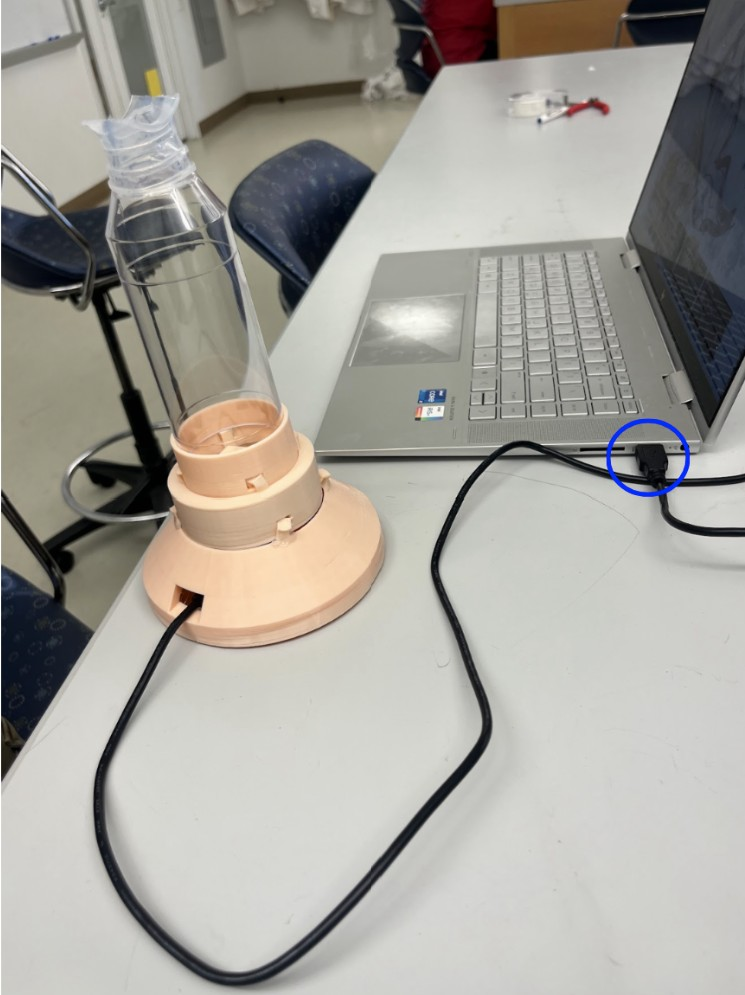
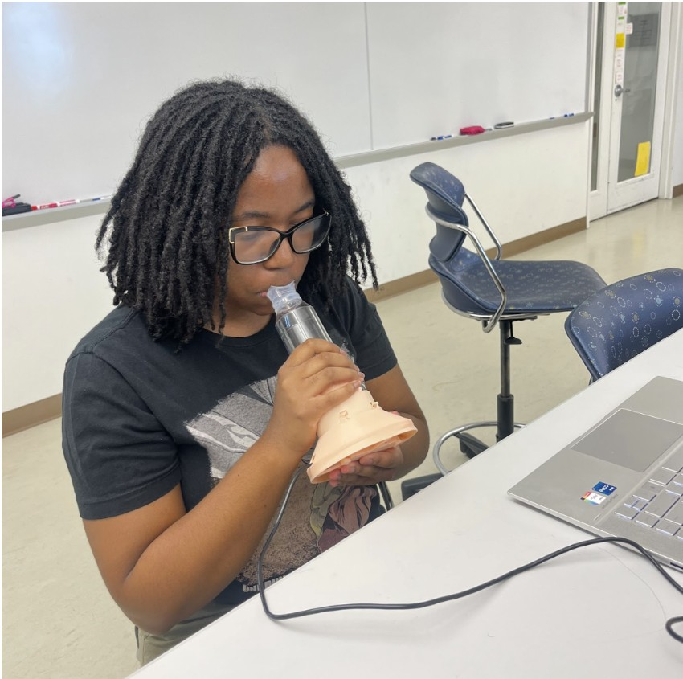
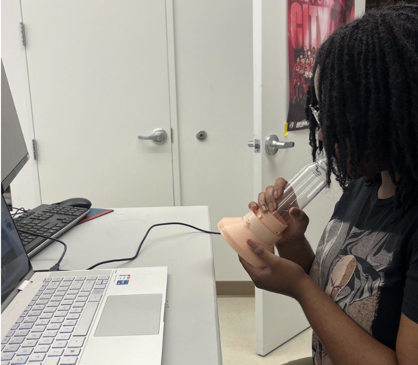
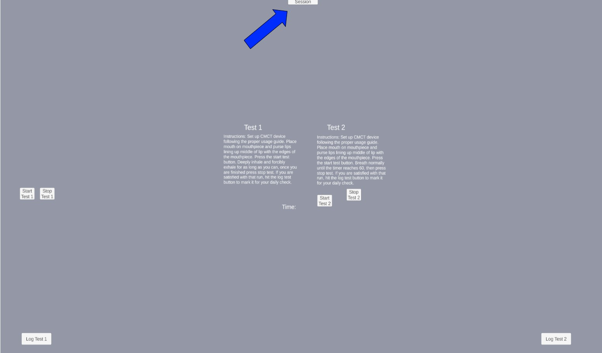
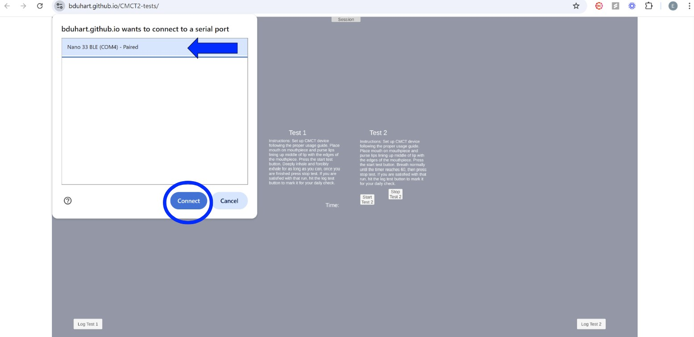
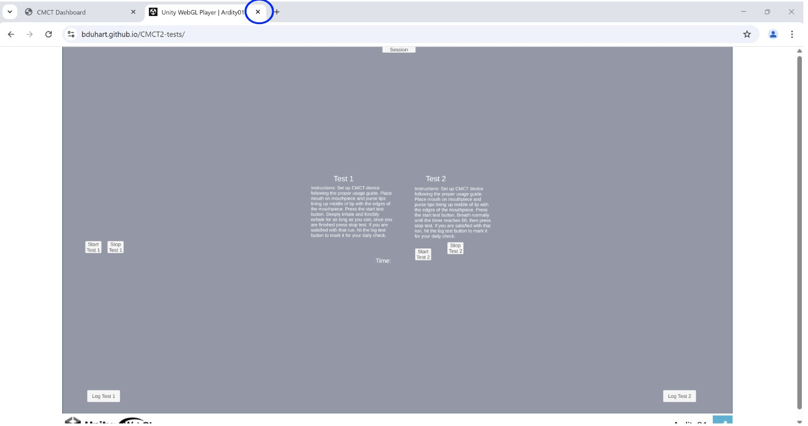

Daily Check-In
Instructions Before You Begin
- Set up your workspace:
- Sit comfortably in a chair at a stable table.
- Place your laptop directly in front of you.
- Ensure the device is already set up (see setup instructions under the "User Manual" tab on the dashboard).
- Connect the device to your laptop using the provided USB cord.

- Prepare to use the device:
- Hold the device with your dominant hand gripping the chamber.
- Use your non-dominant hand to stabilize the electronic housing compartment.
- Hold the device at approximately a 45-degree angle.


- Start your session:
- Navigate to the test screen by clicking "Continue to Test."
-
Click the "Session" button at the top of the page.

-
When the pop-up window appears, select the available serial port from the list.

- Click "Connect" to proceed.
- Complete the tests:
- Test 1:
- Read all on-screen instructions carefully.
- When ready, click "Start Test 1" using your non-dominant hand.
- Quickly stabilize the device again with your non-dominant hand.
- Follow the instructions on the screen throughout the test.
- When finished, click "Stop Test 1."
- If interrupted, click "Start Test 1" to restart.
- After completing the test, click "Log Test 1" to save your results.
- Test 2:
- After logging Test 1, continue immediately to Test 2.
- Read the on-screen instructions carefully.
- When ready, click "Start Test 2" using your non-dominant hand.
- Quickly stabilize the device again with your non-dominant hand.
- Follow the steps shown on the screen.
- When finished, click "Stop Test 2."
- If interrupted, click "Start Test 2" to restart.
- After completing the test, click "Log Test 2" to save your results.
- Test 1:
- After Completing Both Tests:
- Confirm both tests have been logged successfully.
- Once confirmed, you may safely disconnect the device from your laptop.
-
Close the testing program and return to the dashboard.

- Important Safety Notes:
- ❗ If you feel lightheaded, dizzy, faint, or severely uncomfortable at any point, stop the test immediately. If you do not feel better after 5 minutes, contact your doctor.
- ❗ Do not unplug the USB cord during the testing process unless instructed by technical support.
- ❗ Ensure the device remains stable and avoid sudden hand movements during tests.
- Troubleshooting:
- Device not connecting?
- Ensure the USB cord is properly inserted.
- Restart the dashboard application and try again.
- Try switching USB ports if available.
- Serial port not appearing?
- Disconnect and reconnect the device.
- Restart your laptop if the issue persists.
- Test freezes or crashes?
- Close and restart the dashboard application.
- Reconnect the device and start a new session.
- Device not connecting?
- Need Help?
For additional support, click the "Help and Support" button on the dashboard screen.
WebGL Console Output: